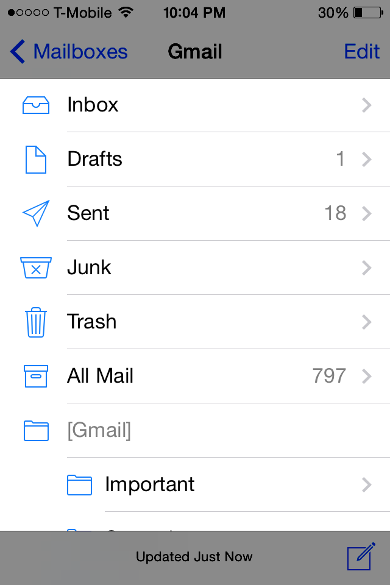
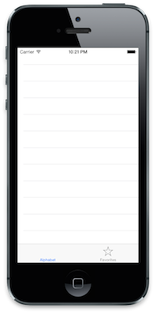
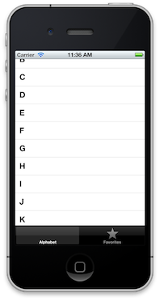
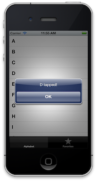

Tables
We've gone through views, controllers, controller-containers, but now I want to diverge and get a bit more specific. The UITableView class is so central to most iOS apps that it deserves a chapter to itself (and probably several more!).
Look through the default apps that come on your phone or iPad and you'll see a trend even more universal than blue and black bars: scrolling lists. And boy do they scroll, right? Phone.app can fling through an enormous list of contacts with creamy ease; SMS.app practically flies through your blue and green bubbly messages. They look quite different but they're built with the same tool: UITableView.

UITableView is built for scrolling content which is alike in presentation but encompasses dozens to thousands of items. The trick that lets it scale from nine to nine hundred items is that it only actually uses a fixed constant of subviews in memory at any given time. That sounds complicated, so I'll break it down.
In your Mail.app, you could have hundreds of emails in your inbox but only a portion of them are on screen at any given time (about six). When you scroll, the topmost emails slowly move offscreen. The table view will actually take these hidden views and move them to the opposite end of the screen. So those message views that move off the top of the screen, get repositioned below the screen, and have their content replaced with the appropriate data for that new position. The table view moves its rows around incredibly fast, so even if there are hundreds of items in your table, only a handful of row views are kept in memory.
Makes more sense, I hope.
So, how do we take advantage of this awesome class? UITableView is a view like any other UIView, so we have to add it as a subview with the appropriate frame. We also need to assign it delegate and dataSource objects. These objects (or, more commonly, object) absolutely must implement a few methods, with the option to implement more. The table view will then call these methods on the objects to get the information it needs to draw all of its rows. Doesn't sound bad, right? Let's get to the code.
Remember that "other" UIViewController we made in the Containers chapter? We're going to replace that with our own controller which uses a UITableView to present a bunch of data. Let's start by making that controller class.
Create AlphabetController in `./app/controllers/AlphabetController.rb', filling the initial implementation with:
class AlphabetController < UIViewController
def viewDidLoad
super
self.title = "Alphabet"
@table = UITableView.alloc.initWithFrame(self.view.bounds)
self.view.addSubview @table
end
end
Should be familiar stuff by now. However, view.bounds might be a little new. A view's bounds returns a CGRect, just like view.frame; however, it has an empty origin point. Essentially it's the description of a view's size without its position. So when we say newView.initWithFrame(view.bounds), we're telling newView to size itself to fill view.
Back in AppDelegate, let's modify our tab controller to use this new controller:
...
controller = TapController.alloc.initWithNibName(nil, bundle: nil)
nav_controller = UINavigationController.alloc.initWithRootViewController(controller)
alphabet_controller = AlphabetController.alloc.initWithNibName(nil, bundle: nil)
tab_controller = UITabBarController.alloc.initWithNibName(nil, bundle: nil)
tab_controller.viewControllers = [alphabet_controller, nav_controller]
@window.rootViewController = tab_controller
...
All we needed to do is create a new AlphabetController and then place it at the front of tab_controller's viewControllers. rake and you should see a lovely, but empty, table view:

Time to fill in our AlphabetController. First, we need to set our controller as the table's dataSource at the end of viewDidLoad:
...
def viewDidLoad
...
@table.dataSource = self
end
...
The data source must implement the following methods:
tableView:cellForRowAtIndexPath:tableView:numberOfRowsInSection:
There are actually a bunch of methods it can use (which you can check in Apple's docs) but the most basic table view dataSource only needs those. So...let's define them!
def tableView(tableView, cellForRowAtIndexPath: indexPath)
# return the UITableViewCell for the row
end
def tableView(tableView, numberOfRowsInSection: section)
# return the number of rows
end
cellForRowAtIndexPath: uses two unfamiliar objects: an NSIndexPath for indexPath and it returns a UITableViewCell. NSIndexPath is an object that has a section and a row property, which in this case is how we find out what row we're presenting.
UITableViewCell is the UIView subclass that actually gets displayed in our table. The default implementation comes with some useful fields, including a textLabel and an imageView. You can subclass UITableViewCell to add a custom look and behavior, but we can get something useful using the normal class.
cellForRowAtIndexPath should either create a new cell or recycle an off-screen one, populate it with the data corresponding to indexPath, and return the cell. Here's what a more complete implementation looks like:
def tableView(tableView, cellForRowAtIndexPath: indexPath)
@reuseIdentifier ||= "CELL_IDENTIFIER"
cell = tableView.dequeueReusableCellWithIdentifier(@reuseIdentifier) || begin
UITableViewCell.alloc.initWithStyle(UITableViewCellStyleDefault, reuseIdentifier:@reuseIdentifier)
end
# put your data in the cell
cell
end
Wait, what's this reuseIdentifier business? Well, UITableView does its "reuse" magic by giving an identifier to each type of cell used in the table. When you grab a cell for reuse, you actually grab them from a pool of cells with the same identifier. So, if for some reason you had a unique identifier for every row, none of the cells could get reused because there would only ever been one cell in each pool. If you had two visually distinct and totally different types of rows, you would probably have two identifiers. Sound reasonable?
You might not be familiar with the ||= operator. In Ruby, a ||= b means "if a is nil/false, then assign it the value of b". It's a good way to give a default value to an object, or ensure that it's only assigned once, as in the example above.
So we use dequeueReusableCellWithIdentifier: to grab a UITableViewCell with that identifier; if we don't have one (thus the result is nil), we run the begin/end block. This block creates a new UITableViewCell with a style (more described here) and the reuseIdentifier for this cell. At the end of the method, we should return our cell.
If you haven't guessed, we're going to populate our table with the letters of the alphabet. It's not terribly useful or complicated, but it's easy to setup so we can see the cell reuse in action. Feel free to use a more creative data set :)
In viewDidLoad, let's initialize an array to use as the titles of our rows. Since Ruby is awesome, we can use a quick one-liner:
def viewDidLoad
...
@data = ("A".."Z").to_a
end
This will create an array containing all the uppercase letters of the alphabet. Nifty, huh?
Now we need to fill in our two data source methods. numberOfRowsInSection: is pretty straight-forward, since all we're doing is using @data:
def tableView(tableView, numberOfRowsInSection: section)
@data.count
end
In cellForRowAtIndexPath:, we simple set our cell's provided textLabel to use the corresponding string in @data:
def tableView(tableView, cellForRowAtIndexPath: indexPath)
...
cell.textLabel.text = @data[indexPath.row]
cell
end
Give it a rake and check it:

Not bad right? Let's do one more thing and add some interactivity.
Remember how I said a UITableView has a dataSource and a delegate? Well let's make our AlphabetController the delegate too, so it can do something when a row is tapped.
The UITableView dataSource methods are generally about supplying information to a table; the delegate methods concern themselves with how the table looks and how the user interacts with it once the data has loaded. We'll use one of these delegate methods to detect when a row is tapped by the user, and then we'll show an alert.
Start by actually making our controller the delegate in viewDidLoad:
def viewDidLoad
...
@table.dataSource = self
@table.delegate = self
...
end
There aren't any required methods of a table's delegate; you're free to implement any (or none) for your needs. We're going to use the delegate method tableView:didSelectRowAtIndexPath: to figure out when a row was tapped by the user, like so:
def tableView(tableView, didSelectRowAtIndexPath:indexPath)
tableView.deselectRowAtIndexPath(indexPath, animated: true)
alert = UIAlertView.alloc.init
alert.message = "#{@data[indexPath.row]} tapped!"
alert.addButtonWithTitle "OK"
alert.show
end
We need to deselectRowAtIndexPath:animated because by default UITableView will keep that row highlighted in blue. But besides that, the rest is stuff we've covered.
rake and give it a whirl:

W-w-w-wrap up
That covers UITableView basics. You can do a world of customizations and behaviors to make them do really neat things, but I'll save that for a more in-depth writeup someday.
What did we actually learn today?
UITableViews display rows of similar looking data in an efficient manner.UITableViews have adataSourcefor supplying information and adelegatefor managing user behavior and look-and-feel.- The
dataSourcehas two required methods,numberOfRowsInSectionandcellForRowAtIndexPath.cellForRowAtIndexPathshould return an instance ofUITableViewCell, customized for that particular row. - You can use the
delegatemethoddidSelectRowAtIndexPathto determine what happens when a user taps a row.